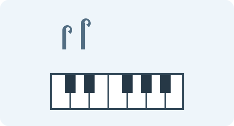
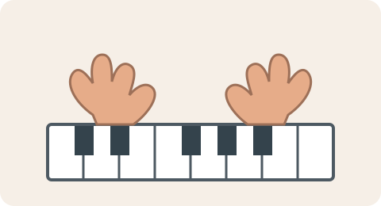

A song gave me a reason to start
I did not know how to play the piano. One day, I wanted to play a song that I really liked, and I had a keyboard with me. I began learning that song without first learning how to play the piano in a general way. My goal was simple: to make the music I liked come from the keys in front of me.
Looking back, this was an unusual way to begin. I was not starting with a full course or a list of piano basics. I was following my interest in one particular piece of music. That interest gave me a reason to sit down at the keyboard and try.

Learning it part by part
I watched someone play the song on a keyboard in an online video. Then I tried to repeat what I had seen. Instead of attempting the entire song at once, I worked on one part, repeated it again and again, and moved on to another part. After learning the separate parts, I tried joining them together.
What helped me begin
- I had a keyboard available.
- I had a song that I really wanted to play.
- I could watch an online demonstration and repeat what I saw.
The steps I followed
- Watch how a section of the song is played.
- Try to copy that section on my keyboard.
- Repeat it until I can play it, then practise the next part.
- Join the parts and try to play more of the song.
This approach helped me learn most of the song. It also showed me that repetition can help with a specific part, especially when I can watch and listen to an example. The song itself kept me interested in trying again.
The part that stopped me
The biggest difficulty came when the song required my left hand. I did not yet have the skills to play that part. I felt frustrated, so I tried again and again, but repeating the attempt did not solve the problem. I had reached a point where wanting to play the song was not enough by itself; I needed to learn the skills behind that part.

| Stage | What happened for me |
|---|---|
| Getting started | A song I liked made me want to try the keyboard. |
| Practising | I copied online demonstrations and repeated parts. |
| Meeting a challenge | The left-hand part needed skills I had not learned. |
What I learned
This experience taught me that learning the proper basics is important. Starting with a song I loved was exciting, and it helped me learn a lot of it. But when I reached a part that depended on skills I did not have, trying harder was not enough. If I try again, I want to learn the fundamentals as well as practise the song. A song can be a wonderful reason to begin, while learning the basics can help me continue.
I still think it was worthwhile to begin with the music that interested me. It gave me a first experience at the keyboard and helped me discover what I could do and what I still needed to learn. For someone else who feels inspired by a song, my experience is a reminder to enjoy that motivation and also give time to the foundations.
For a general introduction, see this Yamaha guide to playing piano.